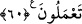

kuru, ayrılık ehlidir. Yine yaş, müşâhede sâhibi; kuru, vücûd sahibidir. Yine yaş, Allah
ile bâkî olan; kuru nefis ile bâkî olandır.
“apaçık bir Kitab’da olmasın.” Bu kitap, kitapların anası (ümmü’l-kitab)’dır. et-
Te’vîlâtü’n-necmiyye’de böyle geçmektedir.
60. Geceleyin sizi öldüren (öldürür gibi uyutan), gündüzün de ne işlediğinizi
bilen; sonra belirlenmiş ecel tamamlansın diye gündüzün sizi dirilten (uyandıran)
O’dur. Sonra dönüşünüz yine O’nadır. Sonunda O, yaptıklarınızı size haber
verecektir.
“Geceleyin sizi öldüren” Burada hitap, mü’min-kafir herkesedir. Yani geceleyin sizi
uyutur, his ve ayırdetme kabiliyetinizin kalmaması hususunda sizi ölü gibi kılar. İşte bu
yüzdendir ki bir rivayette “Uyku, ölümün kardeşidir.”[117] buyurulmuştur.
(
)’nin esas anlamı, bir şeyi tamamen almak, kabzetmek demektir.
Hz. Ali (r.a.)’ın şöyle dediği rivayet edilir. “Uyku anında ruh çıkar, cesedde onun
şuaları kalır. Bu sâyede rüya görür. Uyanınca ruh, bir anda bedene geri döner. Yani,
rüyayı gören insanî ruhtur. O, berzah aleminde hayvanî ruhtan sâdır olan güzel ve çirkin
şeyleri görür. Bu hayvanî ruh, insanî ruhun gölgesi yerindedir. “Hayvanî” ve “insanî”
tabirleri, filozofların ıstılahıdır. Sülûk ehli, ona “ruh ve onun tenezzülü” derler.
“gündüzün de ne işlediğinizi” yapıp kazandığınızı “bilen”
İnsanın cevârihi, amellerini işlediği azalarıdır. Genellikle gece uykuya, gündüz geçim
için kazanmaya tahsis edilmiştir.
“sonra belirlenmiş ecel tamamlansın diye” Yani uyanan kimse, dünyada kendisi için
belirlenmiş ecelinin (müddetinin) sonuna ulaşması için “gündüzün sizi dirilten”
uyandıran “O’dur.”
“
” kelimesinin esas mânâsı, bir şeyin tamam olduğuna hükmetmektir.
“Ecelin tamamlanması”, ölümle ömrün başka şeylerden ayrılmasıdır. Ecel ise hayat
müddetinin sonudur.
“Gündüzün sizi dirilten.” cümlesi, “Geceleyin sizi öldüren.” cümlesine atfedilmiştir.
Bu iki cümle arasına “Gündüzün ne işlediğinizi bilen” cümlesinin konulması, onların
tekrar diriltilmelerinin kendileri için büyük bir lütuf ve ihsan olduğunu bildirmek
içindir. Onların devamlı olarak ölü halde kalmalarına, hatta tamâmen helaklerine sebep
olacak kötü amellerini bildiği halde onlara hayatı tekrar bahşettiğine ve belli bir
zamana kadar mühlet verdiğine dikkat çekmektedir. Nitekim “sonra” kelimesi, buna